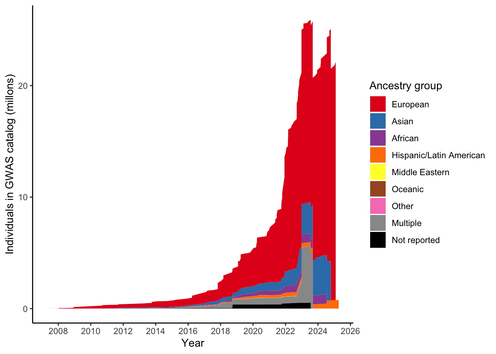
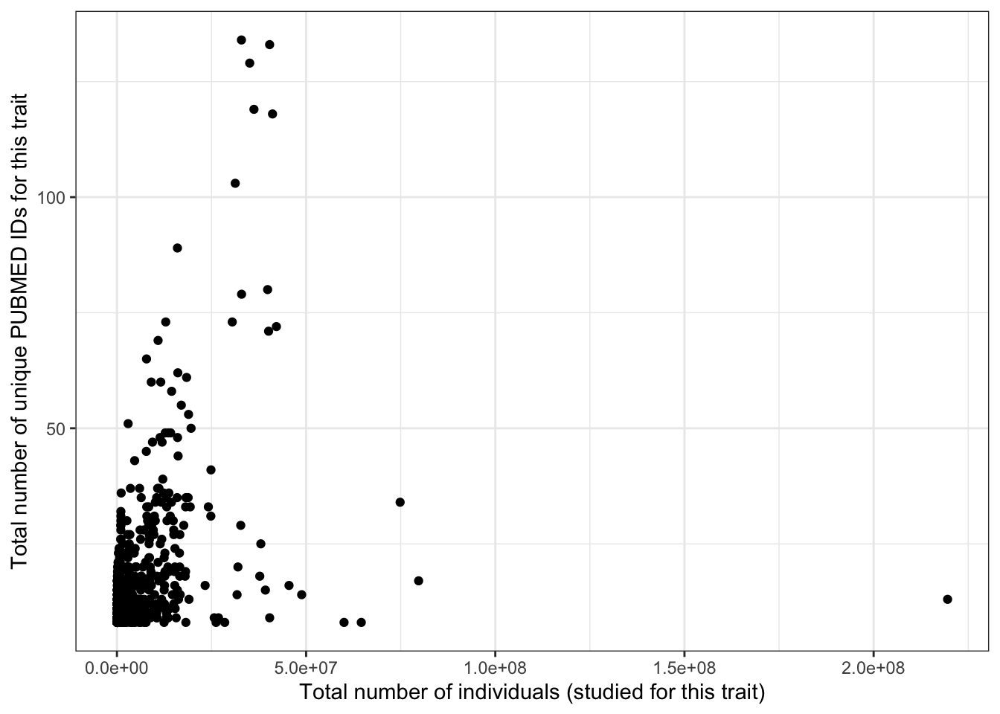
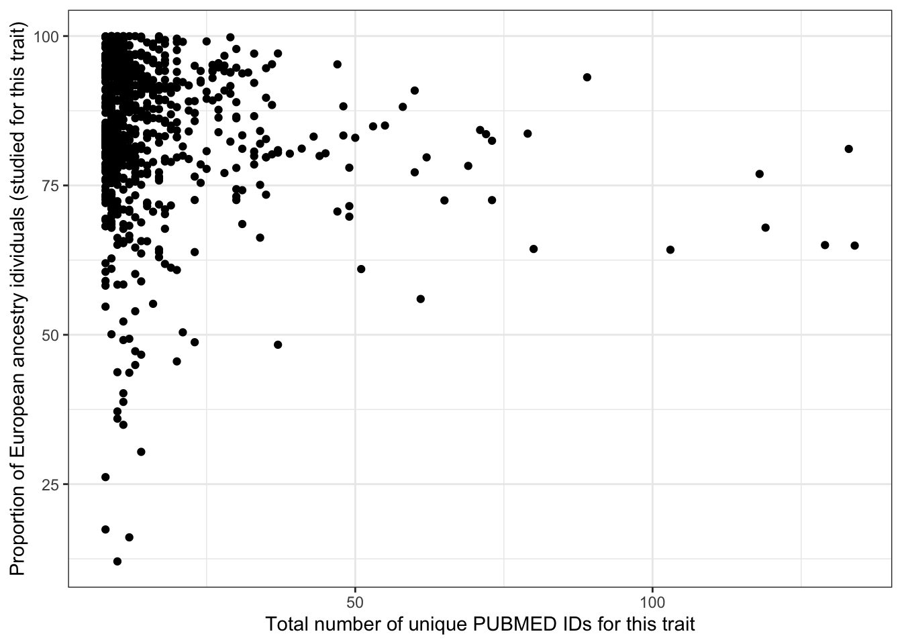

Disease investigated by ancestry
Last updated: 2025-08-21
Checks: 7 0
Knit directory:
genomics_ancest_disease_dispar/
This reproducible R Markdown analysis was created with workflowr (version 1.7.1). The Checks tab describes the reproducibility checks that were applied when the results were created. The Past versions tab lists the development history.
Great! Since the R Markdown file has been committed to the Git repository, you know the exact version of the code that produced these results.
Great job! The global environment was empty. Objects defined in the global environment can affect the analysis in your R Markdown file in unknown ways. For reproduciblity it’s best to always run the code in an empty environment.
The command set.seed(20220216) was run prior to running
the code in the R Markdown file. Setting a seed ensures that any results
that rely on randomness, e.g. subsampling or permutations, are
reproducible.
Great job! Recording the operating system, R version, and package versions is critical for reproducibility.
Nice! There were no cached chunks for this analysis, so you can be confident that you successfully produced the results during this run.
Great job! Using relative paths to the files within your workflowr project makes it easier to run your code on other machines.
Great! You are using Git for version control. Tracking code development and connecting the code version to the results is critical for reproducibility.
The results in this page were generated with repository version fa9a4da. See the Past versions tab to see a history of the changes made to the R Markdown and HTML files.
Note that you need to be careful to ensure that all relevant files for
the analysis have been committed to Git prior to generating the results
(you can use wflow_publish or
wflow_git_commit). workflowr only checks the R Markdown
file, but you know if there are other scripts or data files that it
depends on. Below is the status of the Git repository when the results
were generated:
Ignored files:
Ignored: .Rproj.user/
Ignored: analysis/figure/
Ignored: data/gwas_catalog/
Ignored: output/gwas_study_info_cohort_corrected.csv
Untracked files:
Untracked: data/.DS_Store
Untracked: gwas_time.pdf
Untracked: renv/
Unstaged changes:
Modified: .Rprofile
Modified: code/collapse_diseases.R
Note that any generated files, e.g. HTML, png, CSS, etc., are not included in this status report because it is ok for generated content to have uncommitted changes.
These are the previous versions of the repository in which changes were
made to the R Markdown
(analysis/disease_inves_by_ancest.Rmd) and HTML
(docs/disease_inves_by_ancest.html) files. If you’ve
configured a remote Git repository (see ?wflow_git_remote),
click on the hyperlinks in the table below to view the files as they
were in that past version.
| File | Version | Author | Date | Message |
|---|---|---|---|---|
| Rmd | fa9a4da | IJbeasley | 2025-08-21 | Starting test of relationship between proportion european and total sample size |
| html | f5087d2 | IJBeasley | 2025-07-30 | Build site. |
| Rmd | 72172e3 | IJBeasley | 2025-07-30 | Split page into disease by ancest |
| html | 2fd5755 | Isobel Beasley | 2022-02-16 | Build site. |
| Rmd | 7347b5d | Isobel Beasley | 2022-02-16 | Add initial plotting using gwas cat stats |
Load data
library(dplyr)
library(data.table)
library(ggplot2)
#
# gwas_study_info = data.table::fread("data/gwas_catalog/gwas-catalog-v1.0.3-studies-r2022-02-02.tsv",
# sep = "\t",
# quote = "")
gwas_study_info <- fread(here::here("output/gwas_study_info_cohort_corrected.csv"))
gwas_ancest_info <- fread(here::here("data/gwas_catalog/gwas-catalog-v1.0.3.1-ancestries-r2025-07-21.tsv"),
sep = "\t", quote = "")
gwas_study_info = gwas_study_info |>
dplyr::rename_all(~gsub(" ", "_", .x))
gwas_ancest_info = gwas_ancest_info |>
dplyr::rename_all(~gsub(" ", "_", .x))
gwas_ancest_info = gwas_ancest_info |> arrange(DATE)
gwas_study_info = gwas_study_info |> arrange(DATE)
# Set up custom theme for ggplots
custom_theme <-
list(
theme_bw() +
theme(
panel.border = element_blank(),
axis.line = element_line(),
text = element_text(size = 16),
legend.position = "bottom",
strip.background = element_blank(),
axis.text.x = element_text(angle = 90, hjust = 1, vjust = 0.5)
)
)Get top disease traits
The traits with the most number of pubmed ids:
n_studies_trait = gwas_study_info |>
dplyr::select(MAPPED_TRAIT, MAPPED_TRAIT_URI, PUBMED_ID) |>
dplyr::distinct() |>
dplyr::group_by(MAPPED_TRAIT, MAPPED_TRAIT_URI) |>
dplyr::summarise(n_studies = dplyr::n()) |>
dplyr::arrange(desc(n_studies))`summarise()` has grouped output by 'MAPPED_TRAIT'. You can override using the
`.groups` argument.head(n_studies_trait)# A tibble: 6 × 3
# Groups: MAPPED_TRAIT [6]
MAPPED_TRAIT MAPPED_TRAIT_URI n_studies
<chr> <chr> <int>
1 high density lipoprotein cholesterol measurement http://www.ebi.ac.… 134
2 body mass index http://www.ebi.ac.… 133
3 triglyceride measurement http://www.ebi.ac.… 129
4 low density lipoprotein cholesterol measurement http://www.ebi.ac.… 119
5 type 2 diabetes mellitus http://purl.obolib… 118
6 total cholesterol measurement http://www.ebi.ac.… 103What are the ancestry groups?
# code adapted from https://github.com/armartin/prs_disparities/blob/master/gwas_disparities_time.R
group_ancestry_fn = function(study_ancest){
case_when(
# European
study_ancest %in% c('European') ~ 'European',
# African
study_ancest %in% c('Sub-Saharan African, African American or Afro-Caribbean',
'African unspecified, African American or Afro-Caribbean',
'African American or Afro-Caribbean, African unspecified',
'Sub-Saharan African, African unspecified',
'African-American or Afro-Caribbean',
'Sub-Saharan African',
'African American or Afro-Caribbean',
'African unspecified') ~ 'African',
# Asian
study_ancest %in% c('East Asian, Asian unspecified',
'South Asian, East Asian ',
'South Asian, South East Asian',
'South Asian, South East Asian, East Asian',
'South East Asian, East Asian',
'South East Asian, South Asian, East Asian',
'South Asian, South East Asian, East Asian, Asian unspecified',
'South East Asian, East Asian, South Asian',
'East Asian, South Asian, South East Asian',
'East Asian, South East Asian, South Asian, Asian unspecified',
'South Asian',
'South East Asian',
'South Asian, East Asian',
'South Asian, Asian unspecified',
'Central Asian, South Asian',
'East Asian, South Asian',
'Central Asian',
'East Asian',
'Asian unspecified') ~'Asian',
# Middle eastern
study_ancest == 'Greater Middle Eastern (Middle Eastern, North African or Persian)' ~'Middle Eastern',
# Oceanic
study_ancest %in% c('Aboriginal Australian',
'Oceanian') ~'Oceanic',
# Hispanic/Latin American
study_ancest %in% "Hispanic or Latin American" ~'Hispanic/Latin American',
# Other
study_ancest %in% c('Other',
'Other, NR',
'NR, Other',
'Other admixed ancestry',
'Native American') ~ "Other",
# Not reported
study_ancest %in% "NR" ~ "Not reported",
# Multiple
grepl(", ", study_ancest) ~ 'Multiple',
TRUE~study_ancest
)
}ancestry_colors <- c(
"African" = "#984EA3",
"European" = "#E41A1C",
"Asian" = "#377EB8", #east asian
# "South Asian" = "#4DAF4A",
"Hispanic/Latin American" = "#FF7F00",
"Middle Eastern" = "#FFFF33",
"Oceanic" = "#A65628",
"Other" = "#F781BF",
"Multiple" = "#999999",
"Not reported" = "black"
)
# Define the desired stacking order
ancestry_levels <- c(
"European",
# "East Asian",
# "South Asian",
"Asian",
"African",
"Hispanic/Latin American",
"Middle Eastern",
"Oceanic",
"Other",
"Multiple",
"Not reported"
)Apply this ancestry mapping
grouped_ancest = vector()
for(study_ancest in unique(gwas_ancest_info$BROAD_ANCESTRAL_CATEGORY)){
grouped_ancest[study_ancest] = group_ancestry_fn(study_ancest)
}
grouped_ancest_map = data.frame(ancestry_group = grouped_ancest,
BROAD_ANCESTRAL_CATEGORY = unique(gwas_ancest_info$BROAD_ANCESTRAL_CATEGORY)
)
print(head(grouped_ancest_map)) ancestry_group
European European
Asian unspecified Asian
Other Other
African American or Afro-Caribbean African
NR Not reported
South East Asian Asian
BROAD_ANCESTRAL_CATEGORY
European European
Asian unspecified Asian unspecified
Other Other
African American or Afro-Caribbean African American or Afro-Caribbean
NR NR
South East Asian South East Asiangwas_ancest_info = dplyr::left_join(
gwas_ancest_info,
grouped_ancest_map,
by = "BROAD_ANCESTRAL_CATEGORY")print("Total numbers (in millions) per ancestry group")[1] "Total numbers (in millions) per ancestry group"gwas_ancest_info %>%
group_by(ancestry_group) %>%
summarise(n = sum(NUMBER_OF_INDIVIDUALS, na.rm = TRUE)/10^5)# A tibble: 9 × 2
ancestry_group n
<chr> <dbl>
1 African 4077.
2 Asian 3128.
3 European 91218.
4 Hispanic/Latin American 1787.
5 Middle Eastern 44.7
6 Multiple 1862.
7 Not reported 1488.
8 Oceanic 1.34
9 Other 20.1 gwas_ancest_info %>%
filter(!is.na(NUMBER_OF_INDIVIDUALS)) |>
arrange(DATE) %>%
mutate(ancestry_group = factor(ancestry_group, levels = ancestry_levels)) %>%
group_by(ancestry_group) %>%
mutate(ancest_cumsum = cumsum(as.numeric(NUMBER_OF_INDIVIDUALS))) %>%
select(DATE, ancest_cumsum, ancestry_group, NUMBER_OF_INDIVIDUALS) |>
ggplot(aes(x=DATE, y=ancest_cumsum/(10^6), fill = ancestry_group)
) +
geom_area(position = 'stack') +
scale_x_date(date_labels = '%Y', date_breaks = "2 years") +
theme_classic() +
labs(x = "Year", y = "Individuals in GWAS catalog (millons)") +
scale_fill_manual(values = ancestry_colors, name='Ancestry group') 
Repeat for traits only
gwas_ancest_info =
left_join(
gwas_ancest_info,
gwas_study_info |> select(STUDY_ACCESSION,
COHORT,
MAPPED_TRAIT),
by = "STUDY_ACCESSION"
)gwas_ancest_info_plot =
gwas_ancest_info %>%
filter(!is.na(NUMBER_OF_INDIVIDUALS)) |>
filter(MAPPED_TRAIT == 'high density lipoprotein cholesterol measurement')
print("Total numbers (in millions) per ancestry group")[1] "Total numbers (in millions) per ancestry group"gwas_ancest_info_plot %>%
group_by(ancestry_group) %>%
summarise(n = sum(NUMBER_OF_INDIVIDUALS, na.rm = TRUE)/10^5)# A tibble: 9 × 2
ancestry_group n
<chr> <dbl>
1 African 14.5
2 Asian 35.5
3 European 214.
4 Hispanic/Latin American 7.71
5 Middle Eastern 0.172
6 Multiple 52.1
7 Not reported 5.17
8 Oceanic 0.0965
9 Other 0.0751gwas_ancest_info_plot %>%
group_by(ancestry_group) %>%
mutate(ancestry_group = factor(ancestry_group, levels = ancestry_levels)) %>%
mutate(ancest_cumsum = cumsum(as.numeric(NUMBER_OF_INDIVIDUALS))) %>%
ggplot(aes(x=DATE, y=ancest_cumsum/(10^6), fill = ancestry_group)) +
#geom_area() +
geom_area(position = 'stack') +
scale_x_date(date_labels = '%Y', date_breaks = "2 years") +
theme_classic() +
labs(x = "Year", y = "Individuals in GWAS catalog (millons)") +
scale_fill_manual(values = ancestry_colors, name='Ancestry group') 
Proportion European per trait
euro_n = gwas_ancest_info |>
filter(ancestry_group == "European") |>
pull(NUMBER_OF_INDIVIDUALS) |>
sum(na.rm = T)
total_n = gwas_ancest_info |>
pull(NUMBER_OF_INDIVIDUALS) |>
sum(na.rm = T)
100 * euro_n / total_n[1] 88.02662prop_euro = vector()
total_n_vec = vector()
for(trait in n_studies_trait$MAPPED_TRAIT[1:1000]){
euro_n = gwas_ancest_info |>
filter(ancestry_group == "European") |>
filter(MAPPED_TRAIT == trait) |>
pull(NUMBER_OF_INDIVIDUALS) |>
sum(na.rm = T)
total_n = gwas_ancest_info |>
filter(MAPPED_TRAIT == trait) |>
pull(NUMBER_OF_INDIVIDUALS) |>
sum(na.rm = T)
prop_euro[trait] = 100 * euro_n / total_n
total_n_vec[trait] = total_n
#print(prop_euro[trait])
}
prop_euro_df = data.frame(prop_euro = prop_euro,
trait = names(prop_euro),
total_n = total_n_vec)
prop_euro_df = left_join(prop_euro_df,
n_studies_trait |> rename(trait = MAPPED_TRAIT),
by = "trait")
prop_euro_df$prop_euro |> summary() Min. 1st Qu. Median Mean 3rd Qu. Max.
12.07 81.42 89.92 86.23 93.92 100.00 prop_euro_df |> slice_min(prop_euro, n = 5) prop_euro trait total_n
1 12.06720 adolescent idiopathic scoliosis 386693
2 16.09211 response to antipsychotic drug 14678
3 17.40991 dilated cardiomyopathy 7229158
4 26.17495 glucose tolerance test 796781
5 30.40375 chronic hepatitis C virus infection 1182900
MAPPED_TRAIT_URI n_studies
1 http://www.ebi.ac.uk/efo/EFO_0005423 10
2 http://purl.obolibrary.org/obo/GO_0097332 12
3 http://www.ebi.ac.uk/efo/EFO_0000407 8
4 http://www.ebi.ac.uk/efo/EFO_0004307 8
5 http://www.ebi.ac.uk/efo/EFO_0004220 14prop_euro_df |> slice_max(prop_euro, n =5 ) prop_euro trait total_n
1 100.00000 testicular carcinoma 1796522
2 100.00000 self reported educational attainment 4908190
3 99.99236 base metabolic rate measurement 3807772
4 99.99201 hair color 1063503
5 99.98250 eye measurement 16269499
MAPPED_TRAIT_URI n_studies
1 http://www.ebi.ac.uk/efo/EFO_0005088 11
2 http://www.ebi.ac.uk/efo/EFO_0004784 9
3 http://www.ebi.ac.uk/efo/EFO_0007777 9
4 http://www.ebi.ac.uk/efo/EFO_0003924 10
5 http://www.ebi.ac.uk/efo/EFO_0004731 13prop_euro_df |> slice_max(total_n, n = 5) prop_euro trait total_n
1 77.99807 neuroimaging measurement 219548076
2 97.75004 diet measurement 79737834
3 81.97671 COVID-19 74845527
4 99.96221 brain volume 64578173
5 99.77048 brain connectivity attribute 60026325
MAPPED_TRAIT_URI n_studies
1 http://www.ebi.ac.uk/efo/EFO_0004346 13
2 http://www.ebi.ac.uk/efo/EFO_0008111 17
3 http://purl.obolibrary.org/obo/MONDO_0100096 34
4 http://purl.obolibrary.org/obo/OBA_2050009 8
5 http://purl.obolibrary.org/obo/OBA_2045295 8cor(prop_euro_df$prop_euro, prop_euro_df$total_n,
method = "spearman")[1] 0.08398827prop_euro_df |>
ggplot(aes(x = total_n, y = prop_euro)) +
geom_point() +
theme_bw() +
labs(x = "Total number of individuals (studied for this trait)",
y = "Proportion of European ancestry idividuals (studied for this trait)")prop_euro_df |>
ggplot(aes(x = total_n, y = n_studies)) +
geom_point() +
theme_bw() +
labs(x = "Total number of individuals (studied for this trait)",
y = "Total number of unique PUBMED IDs for this trait")
prop_euro_df |>
ggplot(aes(x = n_studies, y = prop_euro)) +
geom_point() +
theme_bw() +
labs(x = "Total number of unique PUBMED IDs for this trait",
y = "Proportion of European ancestry idividuals (studied for this trait)")
Disease statistics CDC
# following steps from https://static-content.springer.com/esm/art%3A10.1038%2Fs41588-019-0379-x/MediaObjects/41588_2019_379_MOESM1_ESM.pdf
# wonder cdc
# https://wonder.cdc.gov/wonder/help/QuickStart.html#
# https://wonder.cdc.gov/controller/datarequest/D76;jsessionid=2A56E973A3DF13BC5DFDD9C43725
# https://cran.r-project.org/web/packages/whomds/index.html
# whomds: Calculate Results from WHO Model Disability Survey Data
cdc_stats = data.table::fread("data/cdc/Underlying Cause of Death, 1999-2020.txt",
drop = c("Notes", "Race Code", "Cause of death Code")) %>%
filter(!if_any(everything(), ~.x == ""))
cdc_stats %>%
group_by(Race) %>%
slice_max(Deaths,n=10)
# wonder cdc
# https://wonder.cdc.gov/wonder/help/QuickStart.html#
# https://wonder.cdc.gov/controller/datarequest/D76;jsessionid=2A56E973A3DF13BC5DFDD9C43725
# https://cran.r-project.org/web/packages/whomds/index.html
# whomds: Calculate Results from WHO Model Disability Survey Data
sessionInfo()R version 4.3.1 (2023-06-16)
Platform: aarch64-apple-darwin20 (64-bit)
Running under: macOS 15.6
Matrix products: default
BLAS: /Library/Frameworks/R.framework/Versions/4.3-arm64/Resources/lib/libRblas.0.dylib
LAPACK: /Library/Frameworks/R.framework/Versions/4.3-arm64/Resources/lib/libRlapack.dylib; LAPACK version 3.11.0
locale:
[1] en_US.UTF-8/en_US.UTF-8/en_US.UTF-8/C/en_US.UTF-8/en_US.UTF-8
time zone: America/Los_Angeles
tzcode source: internal
attached base packages:
[1] stats graphics grDevices datasets utils methods base
other attached packages:
[1] ggplot2_3.5.2 data.table_1.17.8 dplyr_1.1.4 workflowr_1.7.1
loaded via a namespace (and not attached):
[1] gtable_0.3.6 jsonlite_2.0.0 compiler_4.3.1 renv_1.0.3
[5] promises_1.3.3 tidyselect_1.2.1 Rcpp_1.1.0 stringr_1.5.1
[9] git2r_0.36.2 callr_3.7.6 later_1.4.2 jquerylib_0.1.4
[13] scales_1.4.0 yaml_2.3.10 fastmap_1.2.0 here_1.0.1
[17] R6_2.6.1 labeling_0.4.3 generics_0.1.4 knitr_1.50
[21] tibble_3.3.0 rprojroot_2.1.0 RColorBrewer_1.1-3 bslib_0.9.0
[25] pillar_1.11.0 rlang_1.1.6 utf8_1.2.6 cachem_1.1.0
[29] stringi_1.8.7 httpuv_1.6.16 xfun_0.52 getPass_0.2-4
[33] fs_1.6.6 sass_0.4.10 cli_3.6.5 withr_3.0.2
[37] magrittr_2.0.3 ps_1.9.1 grid_4.3.1 digest_0.6.37
[41] processx_3.8.6 rstudioapi_0.17.1 lifecycle_1.0.4 vctrs_0.6.5
[45] evaluate_1.0.4 glue_1.8.0 farver_2.1.2 whisker_0.4.1
[49] rmarkdown_2.29 httr_1.4.7 tools_4.3.1 pkgconfig_2.0.3
[53] htmltools_0.5.8.1